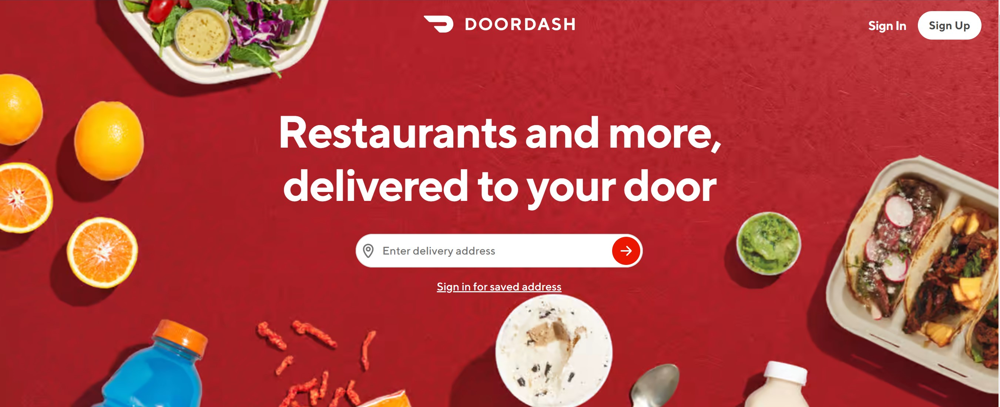
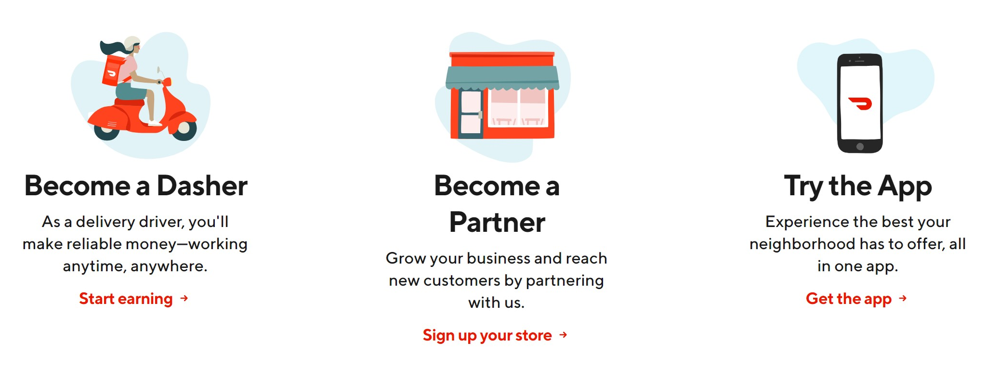
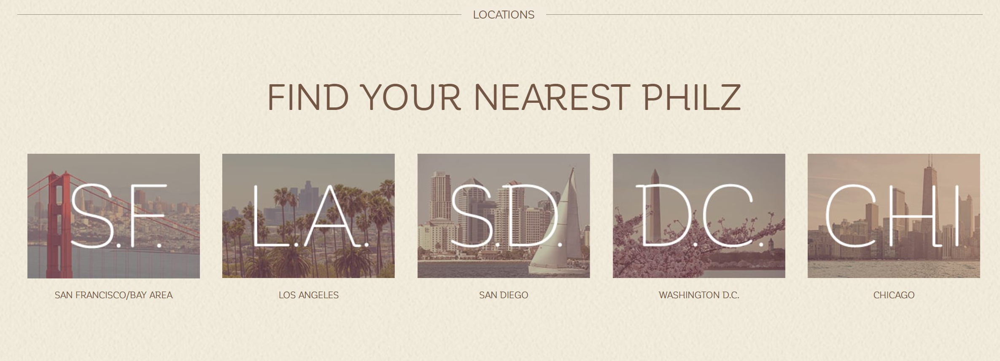
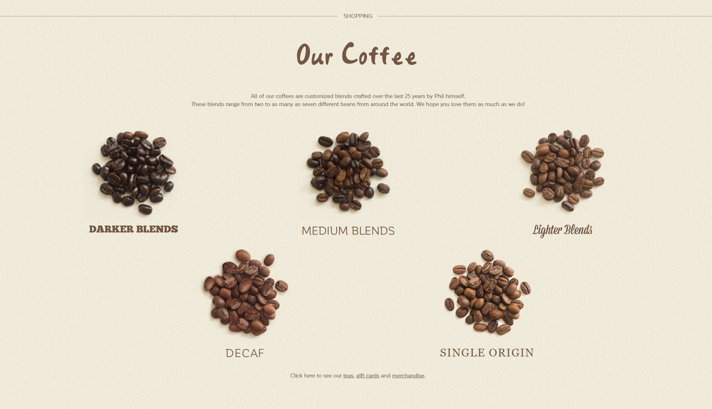
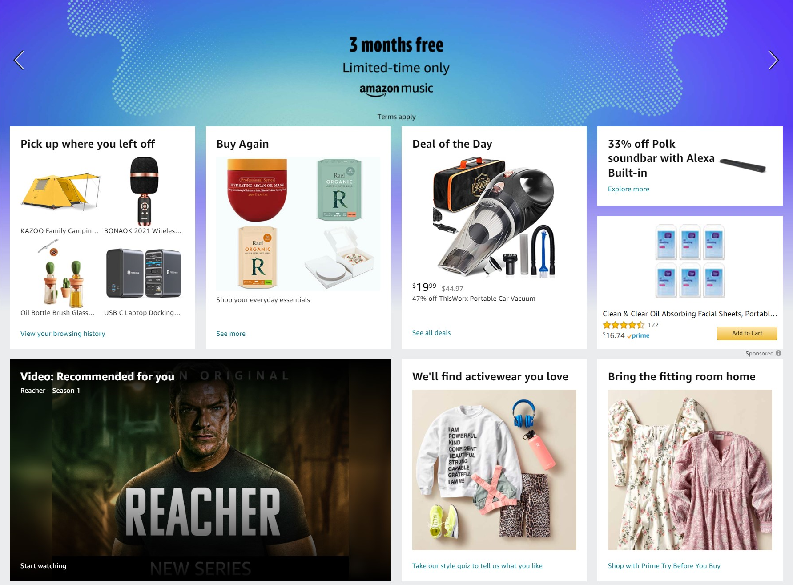
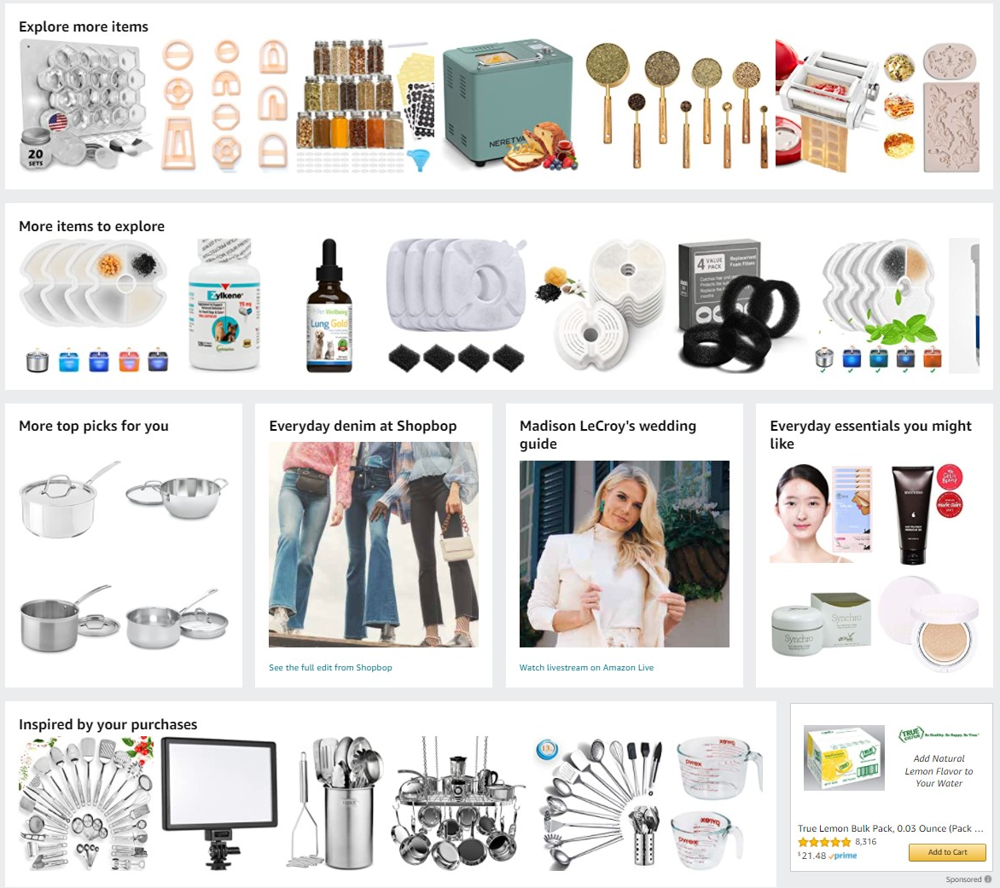
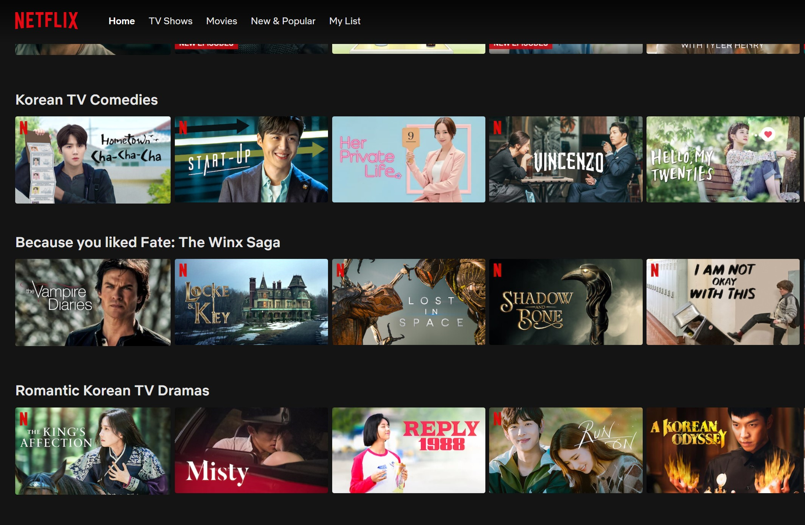
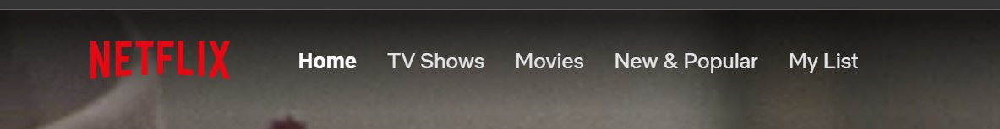

Homework4
Design Elements Homework
CONTRAST-Doordash Website
- Doordash website uses contrast effectively
- Color : the white text on a red background

<<<<<<< HEAD
=======
>>>>>>> 2bbb6137c72810491c3f72fa9d0aba1f6b7a562a
- The white font is more emphasized due to the red background.
In addition, put green vegetables,green sauce,
and blue drink. because red and green complement each other.

- On the other side fo this page,
the color of the main banner was inverted to make the background white and the font&images red to make it neat.
REPETITION-PhilzCoffee Website
- Philzcoffee website uses repetition to make navigation easier.

- ↑ It looks organized by repeatedly listing photos of the same type.
This part is designed to be easy for consumers to find by repeatedly listing the spelling of each region's name where PhilzCoffee is located in the image.

- ↑ The design that repeatedly lists coffee beans allows you to see at a glance where coffee beans-related things are located on the web page.
ALIGNMENT-Amazon Website
- Amazon site is designed by alignment.
It focuses on energizing each image to make it easier for consumers to find the items they are selling by sector.

- ↑ As above, Amazon is a company that sells all products regardless of type, so the shapes of the products are not that constant.
Simply listing various types of products makes it easy to congest the website.
To overcome this problem,
Amazon designed the website's unity by putting products in the same square and neatly aligning the squares.

- ↑Although various sizes of squares are used,
the website looks neat by keeping the alignment at a certain distance.
In addition, the website is designed to systematically make categories stand out
by grouping products of the same classification into a rectangle different from a square.
PROXIMITY-Netflix Website
- Netflix website categorizes different genres using proximity.

- ↑ The Netflix website categorizes different genres using proximity.
To make it easier for subscribers to choose the genre they want,

- ↑In addition to using the energy method,
menu bottons are placed next to the logo so that you can move to pages classified as TV shows, Movies, etc.